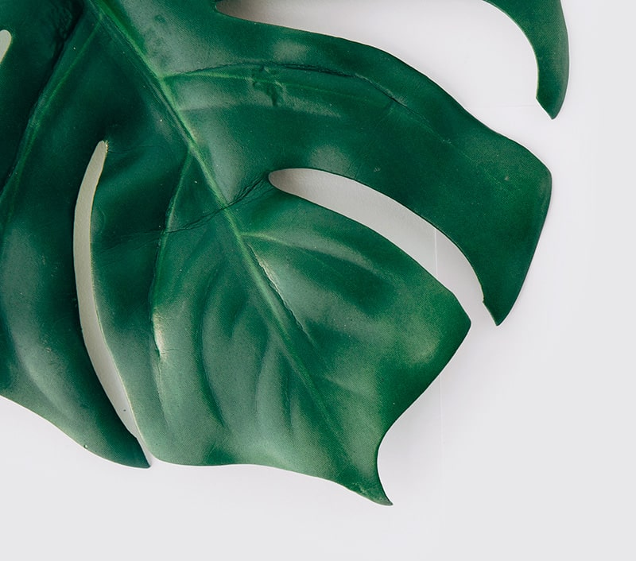
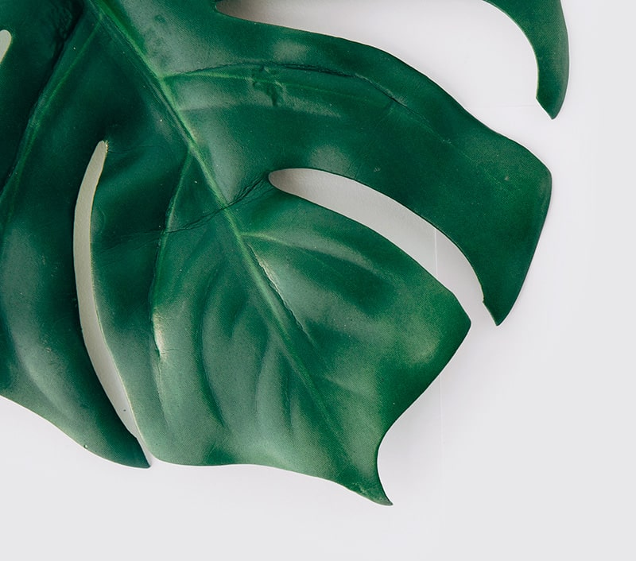

Green Thumb is a mobile app that tracks the health of indoor plants and diagnoses diseases. Create profiles for each of your house plants and measure their health with the Green Thumb soil probe. Using these measurements, Green Thumb will send alerts when your plant requires water or fertilisation. If you start to notice some unusual changes in your plant or a rapid decline in health, Green Thumb’s diagnostic tools will use photos and your probe readings to identify if your plant has become diseased and suggest solutions to restore it. Green Thumb takes the guesswork out of gardening, empowering even the most novice plant parent with the tools to grow their indoor jungle.
As we find ourselves home-office bound while the pandemic rages on, many of us are looking to update our space and bring the outdoors in with the addition of plants. As well as looking beautiful, many indoor plants work to purify the air we breathe and according to a study by The American Society for Horticultural Science, they may even increase our productivity at work (Bringslimark, T., Hartig, T. & Grindal Patil, G. 2007). There is no better time to build your plant collection and Green Thumb is here to help you succeed.
Traditionally, when entering the gardening world, many plant lives are lost, and money wasted as we try to build our gardening skills and learn what not to do. Beginners are often unsure about how to care for their plants and online forums seem to cause more confusion than clarity. Green Thumb is a one stop shop for beginners, providing them with tailored information about their specific species of plant by collecting real time data and providing thorough analysis through AI and APIs.
The recent development of smart pots, such as Mu Designs “Lua”, track plant health through temperature and moisture sensors built into a plant pot that then alerts the user when to water their plant. There is a clear market for this type of product, with Mu Designs raising over half a million dollars from backers in their 2019/20 Indiegogo campaign (Muller, V. N.D). By building this technology into a pot, consumers are faced with a financial roadblock, as these smart pots can cost up to $100 and you can only house one plant per pot. To solve this problem, Green Thumb takes the functionalities of a smart pot into a handheld two pronged probe that can be inserted into the soil of multiple plants. Using Arduino technology, the probe is fitted with sensors that measure soil temperature, moisture and pH and transmit these to a database to track long term plant health. Although neglected in most smart pot sensor systems, soil pH is an essential factor to plant health as it affects the amount of nutrients available to plants (Queensland Government, 2013). By measuring moisture, temperature and pH, Green Thumb is able to give a much more detailed overview of plant health and give users suggestions for how to keep their plants healthy.
Even the most seasoned plant growers experience difficulties when their plants become diseased or infested by pests. Currently, there are countless plant disease identification apps where users can simply take photos of the affected areas and the app will suggest a possible diagnosis. Unfortunately the majority of these apps are built for the agricultural industry and only provide information for commonly grown crops - wheat, rice etc. While yes, a home grower could benefit from learning about how to cultivate their own vegetables, it is difficult to find apps that offer information for growing decorative, indoor plants. Some plant identification apps do exist for the home gardener to identify plant species, but few can identify disease. PictureThis by Glority Global Group Ltd is the leading plant identification app empowering beginner growers to hone their skills. The app uses AI to allow users to not only identify new plant species, but also diagnose plant problems through photos and get growing advice via a chat bot (Glority Global Group Ltd., N.D). While PictureThis’ AI is powerful at diagnosing disease, it fails to address the problem that plant disease is not always visible through plant appearance alone. The American Phytopathological Society (APS) suggests that when diagnosing a plant disease, it is essential to observe soil pH as well as climatic factors such as temperature (Riley, B., Williamson, M. & Maloy, O., 2002). By understanding all the factors affecting plant health, Green Thumb will be able to compete against PictureThis’ monopoly on the market while boasting increased functionalities and a higher diagnosis accuracy.

Green Thumb comprises two primary pieces of technology: a soil probe and a phone app. These technologies work together to assist plant growers in tracking and maintaining plant health. The probe consists of sensors to measure soil nutrition while the app records these measurements, assesses overall plant health and diagnoses plant disease. Combined, this technology serves as a powerful education tool and database for novice and advanced gardeners alike.
The Green Thumb soil probe is a 2 pronged probe fitted with sensors to measure the temperature, moisture and pH a plants’ soil. To collect measurements, the probe is placed directly into the soil of a pot (see figure 1) and is triggered by a button on the Green Thumb app to collect measurements. These measurements are transmitted to the app through Bluetooth and stored in a database. The probe is battery powered and portable so that it can be used to measure soil health in countless pots around the home. The ease of use and portability appeals to a wide market of plant growers while saving them money. The soil probe is the essential tool for this project which gives Green Thumb a competitive advantage against other plant health apps on the market.
The primary function of the Green Thumb app is a plant health database. Upon signing up, users are prompted to build their first plant profile in the app (see figure 2). They are guided through a series of questions regarding the plant species and variety. Once the species of plant is identified, the app will be able to provide specific information and set the ideal values for soil health variables measured through the probe (temperature, moisture and pH). When using the probe, the app will harness AI to determine the health of the plant based on results of the probe measurement. If the plant is classified as unhealthy, the app will be able to determine the cause and provide suggestions to restore the plant back to health (see figure 3).
Plant profiles store the data received from the soil probe to allow users to look back over historical data and compare variables through helpful infographics that can be viewed over a week, month or annual timeframe. Additionally, users can also upload photos of their plant to its respective profile to track growth and changes in its appearance. Over time, the Green Thumb AI will continually process the probe data to detect patterns and provide users with further advice via a helpful chatbot. For example if the AI detects some gradual changes in soil health due to changing weather, the chat bot would read: “Your soil conditions were ideal in summer, but now that it’s winter the soil temperature is dropping fast. Try placing your plant in a sunnier position during these colder months to keep up the healthy growth!”
The final innovative function of the Green Thumb app is the powerful diagnosis tool (see figure 4). If a user notices change in their plant’s appearance and is concerned that their plant has become diseased, they can use this tool to diagnose the disease and learn how to restore their plant. When launching the diagnosis tool, users are instructed to upload photos of the affected area of the plant. These photos are run through Green Thumb’s catalogue of plant disease images to identify possible diagnosis’. Next, the user is required to use the soil probe to take soil readings. The diagnosis tool compares these results to the values set in the plant profile and the images to determine the cause of the disease. For example, if images display white spots on leaves and the soil probe detects high nitrogen levels the diagnosis tool will determine that spider mites are the cause of plant decay. This diagnosis is then stored in the relevant plant profile so users can track their plants journey back to health. Through machine learning and APIs, Green Thumb’s diagnosis tool will be highly accurate and mitigate the risk of mistreatment.
A wide variety of tools and technologies are required for the Green Thumb app and soil probe.
The soil probe will be built using Arduino technology. An Arduino uno board will be fitted with a gravity analogue pH sensor to measure soil pH and a DH22 sensor to measure soil temperature and moisture. An external DC battery pack is used to power the probe and keep the device portable. Finally, an HC05 bluetooth module allows the probe readings to be transmitted to the Green Thumb app via bluetooth.

The Green Thumb app interface will be built using MIT App Inventor 2. Green Thumb’s database to store and retrieve data will be built using the TinyWebDB component on App Inventor. JavaScript plugins will be utilised to increase the interactive elements of the app and to develop a clean and effective UI. Through the Javascript Object Notation (JSON) we will be able to interact with Microsoft Computer Vision API, an image recognition tool from Microsoft to identify plant disease in images uploaded by users.
The biggest challenge of the app will be developing the AI to diagnose and monitor plant health. We will build a machine learning model using the SAS Viya Tool. Alongside the advice of horticulturalists, we will develop labelled data identifying the features of plant health, with the corresponding species specific values to train the machine to produce decision trees that can classify plant health. Further, the Green Thumb AI will be Internet of Things (IoT) enabled so that it can learn from existing data and use this to diagnose plant health to a higher degree of accuracy.

As there are so many working parts to this project, it will require the contribution of several skilled programmers and software engineers as well as horticulturalists to create labelled data and user test the performance and accuracy of the app and probe.
The soil probe will require engineers who have experience working with Arduino systems to build similar devices. In our team, Nikhil has significant experience working with Arduino and will be able to provide us with guidance. Additionally, the Arduino website will serve as a helpful resource as it provides countless tutorials for building similar technology which could be easily adapted to this project. The engineers will need to work alongside programmers who are fluent in C++ to code the probe within the Arduino program allowing it to perform and communicate with the app.
The Green Thumb app will be built in MIT App Inventor 2 which uses a block-based coding language that can be navigated easily by the Into to IT level students in our team. However, it would be advantageous to seek help from JavaScript fluent programmers so they can use their expertise to incorporate the required JavaScript plugins to incorporate our APIs and enhance the UI. As AI and machine learning are critical features of the app, it will be essential to engage with software engineers who are experienced in this feed.
Horticulturalists and soil experts will need to be consulted to build our labelled data for training the AI. Their feedback will be a crucial component in improving the app and as such I would seek their feedback at regular intervals throughout the development of the project. This way, we can adapt the Green Thumb based on their feedback early on rather than having to change everything at completion. This would ensure we can meet our project deadlines and stay within the agreed budget.
To outsource labour, I will post ads in industry specific job boards such as Tech Ladies, to draw from a talented pool of professionals. Once the team has been built, we will rely on communicative technologies including Discord to collaborate and cloud based project management apps to track the progress of the project and assign tasks.
Once built and on the market, Green Thumb will be an affordable solution that fills the knowledge gap for new plant parents. Green Thumb will empower these consumers to become confident plant growers, allowing them to save money by not having to replace dead plants while growing their collection and making friends with other like-minded individuals.
For the more seasoned plant grower, Green Thumb will appeal to their already vested interest in indoor plants. It will allow them to track their plants' health in a way that was previously not viable for at-home growers. Additionally, Green Thumb could be utilized in a commercial setting, allowing nurseries to ensure the health of their plants and pass this data onto customers at the point of purchase.
Manaker, G. H. 1997. Interior Plantscapes: Installation, Maintenance, and Management. 3rd ed. Prentice Hall, Upper Saddle River
Bringslimark, T, Hartig, T & Grindal Patil, G, June 2007, ‘Psychological Benefits of Indoor Plants in Workplaces: Putting Experimental Results into Context’, HortScience, vol. 42: issue 3, pp. 581-587
Mu Design, N.D, Lua, Mu Design, viewed 14 March 2021 <https://mu-design.lu/lua;
MIT, N.D, MIT App Inventor, MIT, viewed 14-16 March 2021 <https://appinventor.mit.edu/;
Arduino, N.D, What is Arduino?, Arduino, viewed 14-16 March 2021 <https://www.arduino.cc/en/guide/introduction;
Demirhan Aydin, 2016, WaterPi: Houseplant Remote Watering and Monitoring System, Arduino viewed 14 March 2021 <https://create.arduino.cc/projecthub/demirhanaydin/waterpi-houseplant-remote-watering-and-monitoring-system-340400?ref=search&ref_id=water&offset=4;
How To Mechatronics, 31 March 2016, How To Build Custom Android App for your Arduino Project using MIT App Inventor, YouTube viewed 14 March 2021 <https://www.youtube.com/watch?v=o-YVvxYiSuk&ab_channel=HowToMechatronics;
Z-HUT, 12 Decemer 2016, How To Receive Multiple Sensor Readings From Your ARDUINO Into Your MIT App Inventor 2 APP, YouTube, viewed 15 March 2021 <https://www.youtube.com/watch?v=5YovICoYCLg&ab_channel=Z-HUT;
Muller, V., N.D, Lua, the smart planter with feelings!, Indiegogo, N.D, viewed 15 April 2021 <https://www.indiegogo.com/projects/lua-the-smart-planter-with-feelings#/updates/all;
Team Opus, 2020, 5 Apps That Will (Kinda) Guarantee You Won’t Kill Your Houseplants, Opus Grows, viewed 15 April 2021 <https://opusgrows.com/blogs/journal/108690758-5-apps-that-will-kinda-guarantee-you-won-t-kill-your-houseplants;
Riley, B., Williamson, M. & Maloy, O., 2002, Plant Disease Diagnosis, The American Phytopathological Society, viewed 18 April 2021 <https://www.apsnet.org/edcenter/disimpactmngmnt/casestudies/Pages/PlantDiseaseDiagnosis.aspx;
Glority Global Group Lts, N.D, PictureThis, Apple App Store, viewed 18 April 2021 <https://apps.apple.com/us/app/picturethis-plant-identifier/id1252497129;
G2, N.D., Best Image Recognition Software, G2, viewed 18 April 2021 <https://www.g2.com/categories/image-recognition;
SAS, N.D., Artifical Intelligence: What is it and why it matters, SAS, viewed 18 April 2021 <https://www.sas.com/en_au/insights/analytics/what-is-artificial-intelligence.html;
Crash Course, 2 November 2017, Machine Learning & Artificial Intelligence: Crash Course Computer Science #34, Youtube, viewed 18 April <https://www.youtube.com/watch?v=z-EtmaFJieY;
Simplilearn, 20 September 2018, Machine Learning Basics, Youtube, viewed 18 April <https://www.youtube.com/watch?v=ukzFI9rgwfU;